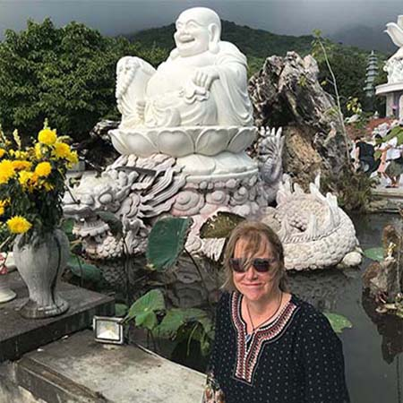
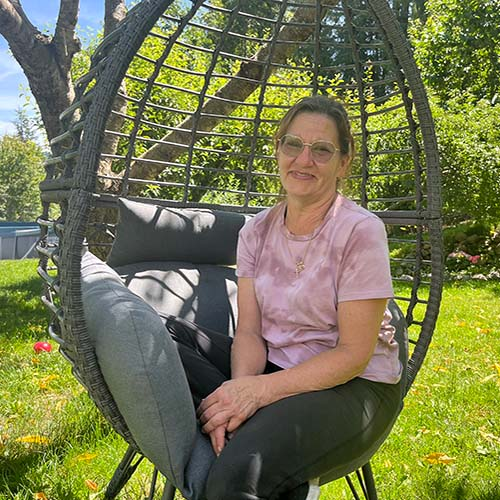
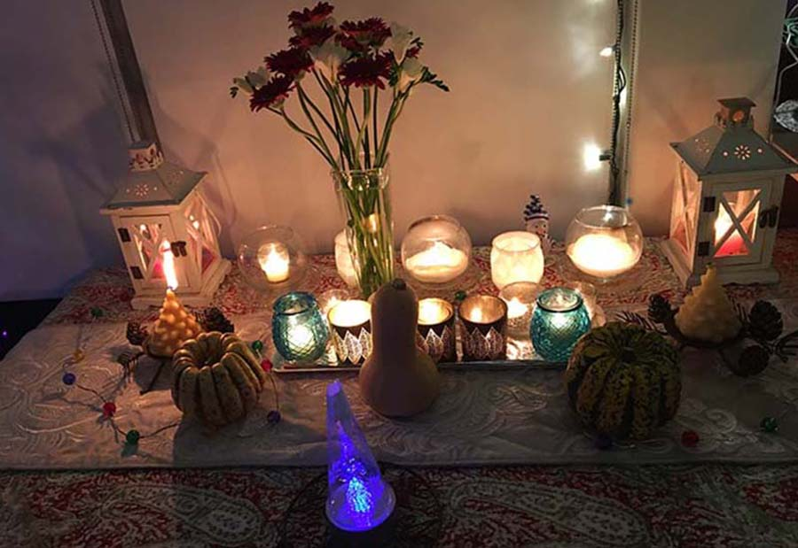

“{{ quote }}“

I chose to become a practitioner of end-of-life care for many reasons. I was at the bedside of my dying
brother, and instead of feeling any sense of calm or courage, I felt overwhelmed, useless - scared.
I was horrified by his pain and felt utterly incapable of helping him. I wanted to be braver than that.
I struggled to find answers and solutions to providing my mother with the best of care as she was dying. I wanted to be
a stronger advocate for her, to stand up for her when she was so alone and scared. And that time, I was braver.
Certified End-of-Life Practitioner
Certified Advanced Energy Practitioner
604-345-3442

I care for the elderly, the infirm and young people with brain injuries. I
put my whole heart and soul into their care. Every success they achieve is a success I feel. This makes me the luckiest
person in the world. I benefit personally from all of my client's trials and triumphs.
It was upon hearing so many stories from my client's families regarding the pain and helplessness they felt when
supporting their dying loved ones that I started looking for more ways to help. Karen introduced me
to End of Life care. I felt like it was the perfect next step in my health care practice.
Certified Nurse Care Aide
604-345-3442
I chose to become a practitioner of end-of-life care for many reasons. I was at the bedside of my dying
brother, and instead of feeling any sense of calm or courage, I felt overwhelmed, useless - scared.
I was horrified by his pain and felt utterly incapable of helping him. I wanted to be braver than that.
I struggled to find answers and solutions to providing my mother with the best of care as she was dying. I wanted to be
a stronger advocate for her, to stand up for her when she was so alone and scared. And that time, I was braver.
I care for the elderly, the infirm and young people with brain injuries. I
put my whole heart and soul into their care. Every success they achieve is a success I feel. This makes me the luckiest
person in the world. I benefit personally from all of my client's fascinating stories, trials and triumphs.
It was upon hearing so many nightmarish stories from my client's families regarding the pain and helplessness they felt when
supporting their dying loved ones that I started looking for additional ways to help. I met Karen and she introduced me
to End of Life care. I felt like it was the perfect next step in my health care practice.
Both Karen and Sarah are up to date with their Basic First Aid training. Both have been cleared by The Criminal Records Review
Program (CRRP) which completes vulnerable sector checks required by the Criminal Records Review Act. These checks protect
children
and vulnerable adults.
We can assist you with a myriad of issues concerning end of life. You may be a young couple who has their will tucked away
but wants to make sure that anything should happen to them they have all their p's and q's dotted. You may be facing some
life threatening challenges and need help with advance care issues and paperwork you may not even know you need. We
can help in all those areas.

We also support you as a patient if you are going through end of life concerns. We are also there for the hard working
caregivers who likely need support and relief. We will, if asked, help negotiate or support the intricate dance that
happens between family members in times of crisis. And we will even water your plants and feed your dog. :)
Please contact us to set up an appointment. We provide long distance help via
Zoom or Google Meet but we also provide consultations at your home.